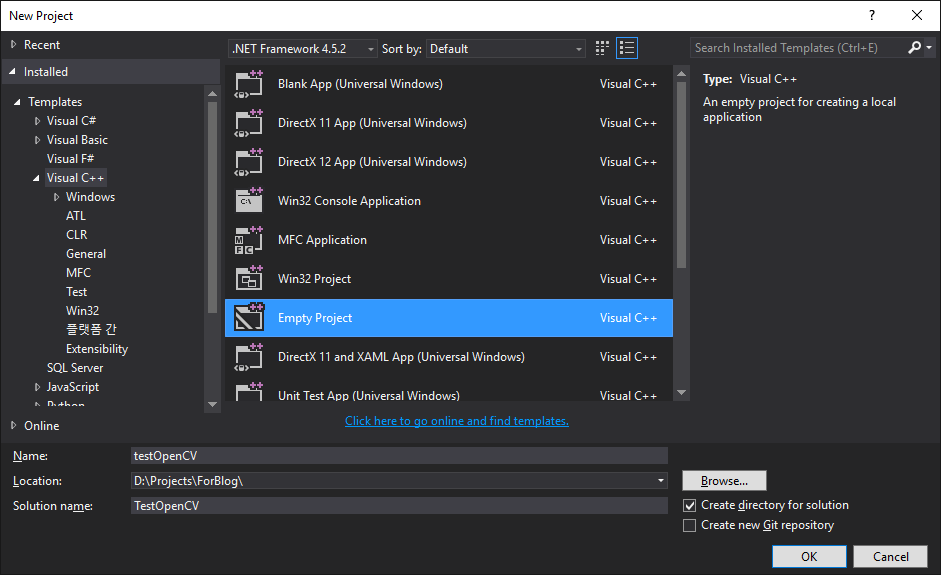
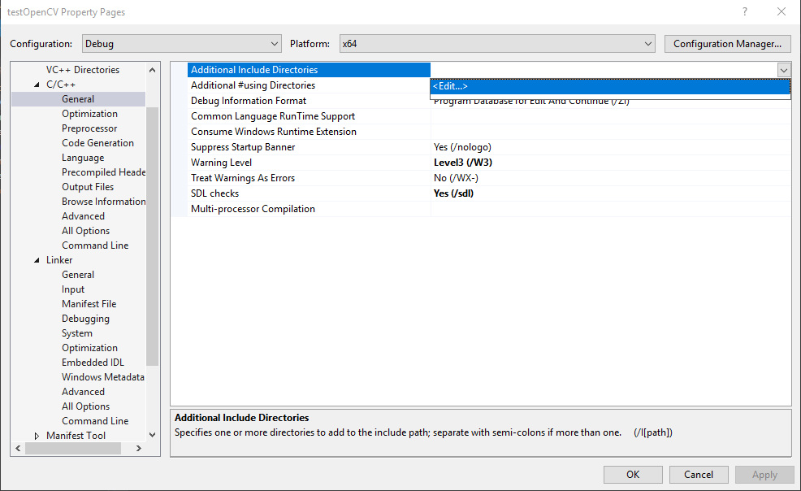
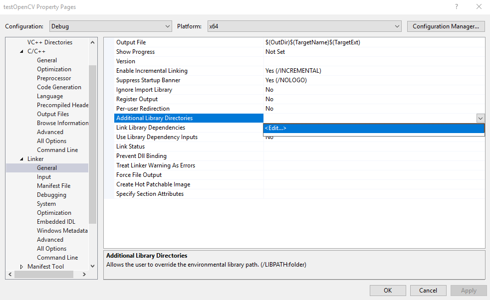
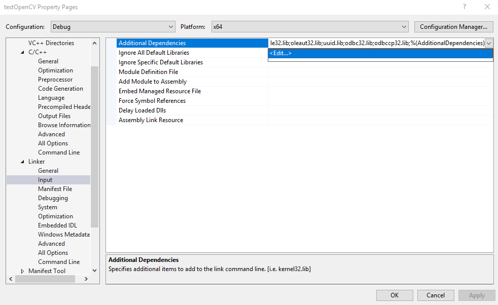
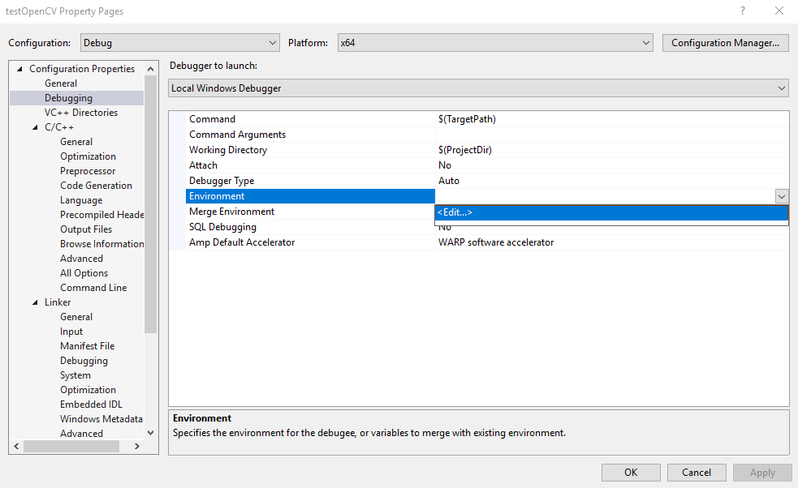
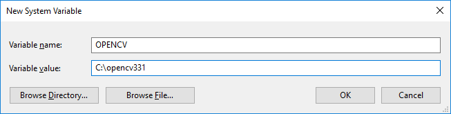

By Nhan December 7, 2018
[this blog was written right after moving coding from python to c++ with VS]
This post note a way to use opencv in Visual studio 2015. Opencv is an power tool to deal with image, video.
1. Download opencv 3.3.1
OpenCV is an useful, well-known library to programmer/student, who are interested in image processing. It is open, free and very easy to use on both Windows or Linux environment.
You guys can download the source code and build library to fit with your working environment or simply download an available pre-built package. In this post, I download a version of opencv from sourceforge, then use it directly as a library in my VSC++ program.
This post implement with Visual Studio 2015 and opencv 3.3.1.
2. Create C++ solution and project
Create an empty c++ project as following figure.

3. Add OpenCV library into the project
This blog presents two methods to import libraries to VS project.
The first method copies directly library files to VS project’s location. If you copy the project to another PC, you do not need to set up again. However, it will occupy space if you have many such projects.
The second method is to put library at a share place, then referring your project to that library. The project may be not working if you change library or project location.
3.1 Method 1: Add OpenCV directly in VS Project
After extracting OpenCV library to some place, you can copy only several necessary folders below into your VS project.
For example, I copy opencv331 to VS project and keep folders as follows. Note that, depending on your OpenCV version, VS version and platform, it maybe x32 or vc12, blah.
3.1.1 Adding API path
When coding, we usually use opencv functions and your compiler need to know where they are. They can be call via a API, which only comprise of declarations. In C/C++, the API is files following with extension *.h/*.hpp.
To add OpenCV API, right click to projects → Properties → click General at C/C++ section. Then add the path of include folder in OpenCV library to Additional Include Directories.
Notes that the project file (.vcxproj) is considered as the current directory. If the structure of your project is similar to Fig 1*, your path should be: opencv331/include

By include the header file (*.h), your code won’t display the errors as ‘not found’, ‘not declaration’, blah.
3.1.2 Adding library path and specify library files
However, the compiler needs the real definitions from built library during linking process. The programmer should have to provide these information in advanced.
There are two parameters for this steps.
Firstly, we specify the path to library files, where contains *.lib files. In the Properties dialog → Linker → General, create a new row and add your path to Additional Library Directories.
In this example, the path should be opencv331/x64/vc14/lib

Secondly, specify the name related files. In the Properties dialog → Linker → Input, create row and add the name of library files to Additional Dependencies.
For version 3.3.1, opencv only one library file namely opencv_world_331.lib or opencv_world_331d.lib.
Notes:
- The suffix d means debug. When setting the Visual Studio, we will use the file name without d for release mode and with d for Debug mode.
- The older versions of opencv has many library files, all of them have the same name style above. Your job in this case is listing all files corresponding to Release/Debug mode.

3.1.3 Adding debugging path
The opencv library built as dynamic link library (dll) should appear in the same output directory, where contains the executive file after build, especially for debug mode.
We can setting these dependency files by specifying the path of dll files to visual studio.
In the Properties dialog → Debugging, add following syntax to Environment option: PATH=opencv331\x64\vc14\bin;%PATH%

3.2 Method 2: Add OpenCV via environment variable or direct path
If there are lots of projects locate only in your PC, you can store opencv331 at a share place and apply direct path as the Method 1 above.
Besides, we can use a string variable to store the real library path, then using this variable to declare your real path to Visual Studio.
In Windows, we can define this variable under system variable as follows: Right click My Commputer or This PC → Properties → Advanced system settings → Advanced → Environment Variables…
In the System variables, create new variable as Fig 6. Here, I assume that you extract opencv331 in C:\ drive.

Now, we just need to append the path of further directories/files to $(OPENCV) and add the path to Visual Studio. By doing this, if you change opencv library to another place, you just need to change the value of environment variable.
For example, the path of dll files: $(OPENCV)\x64\vc14\bin
4. Test
Lets test an example code to read and display frame from video using OpenCV
#include <opencv2/core/core.hpp>
#include <opencv2/highgui/highgui.hpp>
#include <iostream>
using namespace cv;
using namespace std;
int main( int argc, char** argv )
{
if( argc != 2)
{
cout <<" Usage: display_image ImageToLoadAndDisplay" << endl;
return -1;
}
Mat image;
image = imread(argv[1], CV_LOAD_IMAGE_COLOR); // Read the file
if(! image.data ) // Check for invalid input
{
cout << "Could not open or find the image" << std::endl ;
return -1;
}
namedWindow( "Display window", WINDOW_AUTOSIZE );// Create a window for display.
imshow( "Display window", image ); // Show our image inside it.
waitKey(0); // Wait for a keystroke in the window
return 0;
}